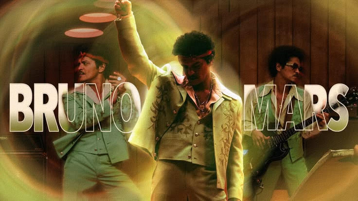
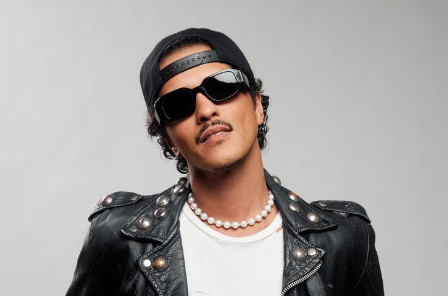
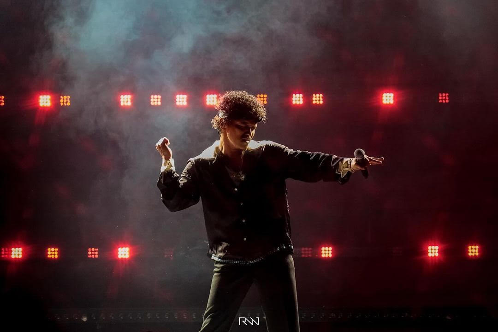

Bruno Mars, nome artístico de Peter Gene Hernandez, é um cantor, compositor e produtor norte-americano nascido no Havaí em 1985, conhecido por misturar pop, funk, R&B e soul em músicas com forte influência retrô e grande energia no palco. Ele começou a carreira compondo para outros artistas e ganhou fama mundial com o álbum Doo-Wops & Hooligans, que trouxe sucessos como Just the Way You Are e Grenade. Depois consolidou seu sucesso com álbuns como Unorthodox Jukebox e 24K Magic, incluindo hits como Uptown Funk, Locked Out of Heaven e That’s What I Like. Também formou o projeto Silk Sonic com Anderson .Paak, lançando Leave The Door Open. Ele é reconhecido por sua presença de palco e já ganhou vários Grammy Awards ao longo de dua carreira.

